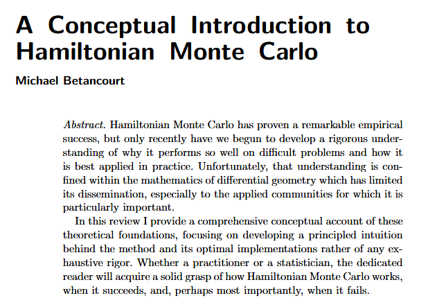
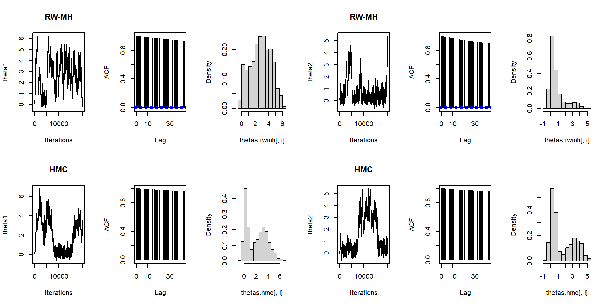

Hamiltonian Monte Carlo
Sumário
Introdução
- Referências, contexto e exemplo inicial
Hamiltonian Monte Carlo
- HMC, Amostragem no HMC, Dinâmica Hamiltoniana, Discretização e Exemplo
Código
Introdução
Artigo 1
Artigo 2
Outras Referências
Contexto
Markov Chain Monte Carlo (MCMC) originou-se com o artigo clássico Metropolis et al. (1953)1, em que foi usado para simular a distribuição de estados para um sistema de moléculas idealizadas.
Los Alamos, Manhattan Project.
Maniac I: 5kb de memória, 70k multiplicações por segundo
Contexto
- Not long after, another approach to molecular simulation was introduced (Alder and Wainwright, 1959), in which the motion of the molecules was deterministic, following Newton’s laws of motion, which have an elegant formalization as Hamiltonian dynamics.
Contexto
- In 1987, a landmark paper by Duane, Kennedy, Pendleton, and Roweth united the MCMC and molecular dynamics approaches.
- They called their method “Hybrid Monte Carlo”, which abbreviates to “HMC”, but the phrase “Hamiltonian Monte Carlo”, retaining the abbreviation, is more specific and descriptive.
- HMC still seems to be under-appreciated by statisticians, and perhaps also by physicists outside the lattice field theory community. (Neal 2011)
Exemplo
\[ \pi(\theta) = \kappa \exp\left\{-0.5(\theta_1^2\theta_2^2+\theta_1^2+\theta_2^2-8\theta_1-8\theta_2\right)\} \]
Distribuições marginais
Metropolis Hastings e HMC
Hamiltonian Monte Carlo
Hamiltonian Monte Carlo
O HMC pode ser visto como uma versão do Metropolis Hastings que introduz propostas distantes do estado atual mas, ainda assim, com alta probabilidade de aceitação.
Metropolis, Metropolis-Hastings
Metropolis: \(P(\theta \to \theta') = P(\theta' \to \theta)\). Exemplo: \(N(\theta, \epsilon)\)
Metropolis-Hastings: \(P(\theta \to \theta') \ne P(\theta' \to \theta)\)

Hamiltonian Monte Carlo
O HMC utiliza a dinâmica hamiltoniana para construção de um algoritmo MCMC.
Esse algoritmo é obtido pela introdução de uma variável auxiliar de momentum \(\rho\).
Na dinâmica, hamiltoniana, a energia do sistema depende de \(\theta\) e de \(\rho\):
\[ \begin{equation} H(\theta,M) = U(\theta) + K(\rho) = \text{constante} \end{equation} \]
Hamiltonian Monte Carlo
Na física, em duas dimensões, a dinâmica hamiltoniana pode ser visualizada como o movimento de uma partícula, sem fricção, em uma superfície de altura variada.
\(U(\theta)\) é a energia potencial (proporcional à altura da superfície)
\(K(\rho)\) é a energia cinética, dada por \(K(\rho) = \frac{1}{2}\rho^\top M^{-1} \rho\).
\(M\) corresponde à “matriz massa” do sistema, sendo simétrica, positiva definida, tipicamente diagonal e frequentemente múltiplo escalar da matriz identidade.
Hamiltonian Monte Carlo
Hamiltonian Monte Carlo
Sabe-se da física estatística que a probablidade do sistema estar em um nível de energia, na temperatura \(T\), é dada pela distribuição canônica:
\[ \begin{align*} p(\theta, \rho) \propto & \,\, \exp\{ -H(\theta, \rho) / T \} \\ = & \,\, \exp\{ -[U(\theta) + K(\rho)] / T \} \end{align*} \]
No MCMC, a posição corresponde à variável de interesse.
A energia potencial é convenientemente escolhida como \(U(\theta) = -\log p(y,\theta) = -k \log [p(\theta|y) p(\theta)]\).
As variáveis de momento são introduzidas artificialmente.
Hamiltonian Monte Carlo
Com \(T=1\) e \(M=I\), temos:
\[ \begin{align*} p(\theta, \rho) \propto & \,\,\, \exp\{ -[-\log p(y,\theta) + \sum_i \rho_i^2/2] \} \\ = & \,\, p(y,\theta) \exp\{-\frac{1}{2} \sum_i \rho_i^2 \} \\ = & \,\, p(y,\theta) \, P \\ = & \,\, p(\theta|y) p(\theta) \, P \end{align*} \]
com \(P \sim N(0, 1)\), isto é, \(P(\rho \leq z) = \Phi(z)\).
Hamiltonian Monte Carlo
Daí que
\[ \begin{align*} p(\theta) \propto & \int p(y,\theta) P \, \,dP \\ = & \,\,p(y,\theta) \\ = & \,\,p(\theta|y) p(\theta) \end{align*} \]Logo podemos simular de \((\theta, P)\) para obtermos amostras de \((y, \theta)\).
Amostragem no HMC
- Obter \(\rho\) de \(P \sim N(0,1)\).
- Resolver a trajetória (discretizada) da partícula \((\theta)\) com energia cinética \(K(\rho)\) e energia potencial \(U(\theta)\) através da dinâmica hamiltoniana. Discretização: algoritmo Leapfrog. Nesse passo obtemos uma proposta \((\theta^* , \rho^*)\).
- Calcular o fator de aceitação \(r = \frac{p(y, \theta^*) \rho^*}{p(y, \theta) \rho}\).
- Aceitar \((\theta^*, -\rho^*)\) se \(r \leq u \sim N(0,1)\) e rejeitar caso contrário.
Observações do passo Metropolis
Para que os passos 3 e 4 acima sejam válidos, é necessária reversibilidade da cadeia, com \(P[(\theta, \rho) \to (\theta^*, \rho^*)] = P[(\theta^*, \rho^*) \to (\theta, \rho)]\).
A dinâmica hamiltoniana é reversível, sendo obtida trocando-se o sinal das derivadas. Para a forma adotada de \(H\), obtém-se reversibilidade ao trocar o sinal de \(\rho\), resolver a trajetória e trocar novamente o sinal de \(\rho\).
Desta forma, toma-se \((\theta^*, -\rho^*)\) como amostra quando a proposta \((\theta, \rho)\) é aceita, o que não altera a distribuição marginal de \(\theta\), logo preserva a amostragem de \((y,\theta)\).
Ilustração

Dinâmica Hamiltoniana
A dinâmica Hamiltoniana é descrita em função de um vetor de posição \(\theta\) e um vetor de momentum \(\rho\), através do Hamiltoniano \(H(\theta, \rho)\).
As derivadas parciais de \(H(\theta, \rho)\) determinam como \(\theta\) e \(\rho\) mudam no tempo, de acordo com as equações Hamiltonianas:
\[ \begin{align*} \frac{d \theta_i}{dt} & = \frac{\partial H}{\partial \rho_i} \\ \frac{d \rho_i}{dt} & = - \frac{\partial H}{\partial \theta_i} \end{align*} \]
Dinâmica Hamiltoniana
Com \(H(\theta, \rho) = U(\theta) + K(\rho)\) temos
\[ \begin{align*} \frac{d \theta_i}{dt} & = [M^{-1} \rho]_i \\ \frac{d \rho_i}{dt} & = - \frac{\partial U} {\partial \theta_i} \end{align*} \]
Discretização
Para implementação computacional, as equações de Hamilton devem ser aproximadas em tempo discreto, para algum stepsize pequeno \(\epsilon\).
Um dos métodos com melhores resultados é o algoritmo leapfrog.
Discretização

Leapfrog Method
O Leapfrog é uma modificação do método de Euler.
Lembrando o método de Euler:
\[ \begin{align} \rho_{t+\epsilon} = \rho_t + \epsilon \frac{d\rho_t}{dt} = \rho_t - \epsilon \frac{dU(\theta_t)}{d\rho} \\ \theta_{t+\epsilon} = \theta_t + \epsilon \frac{d\theta_t}{dt} = \theta_t + \epsilon [M^{-1} \rho_t] \end{align} \]
Leapfrog Method
Leapfrog:
\[ \begin{align} \rho_{t+\epsilon/2} = \rho_t - (\epsilon/2) \frac{dU(\theta)}{d\rho_t} \\ \\ \theta_{t+\epsilon} = \theta_t + \epsilon M^{-1} \rho_{t+\epsilon/2} \\ \\ \rho_{t+\epsilon} = \rho_{t+\epsilon/2} - (\epsilon/2) \frac{dU(\theta_{t+\epsilon})}{d\rho_t} \end{align} \]
Exemplo
- Amostragem de uma distribuição 100-dimensional, normal multivariada, variáveis independentes com desvios 0.01, 0.02, …, 1.00:

Exemplo

Código
Código
Referências
Neal (2011), Betancourt (2017), Girolami and Calderhead (2011), McElreath (2020)